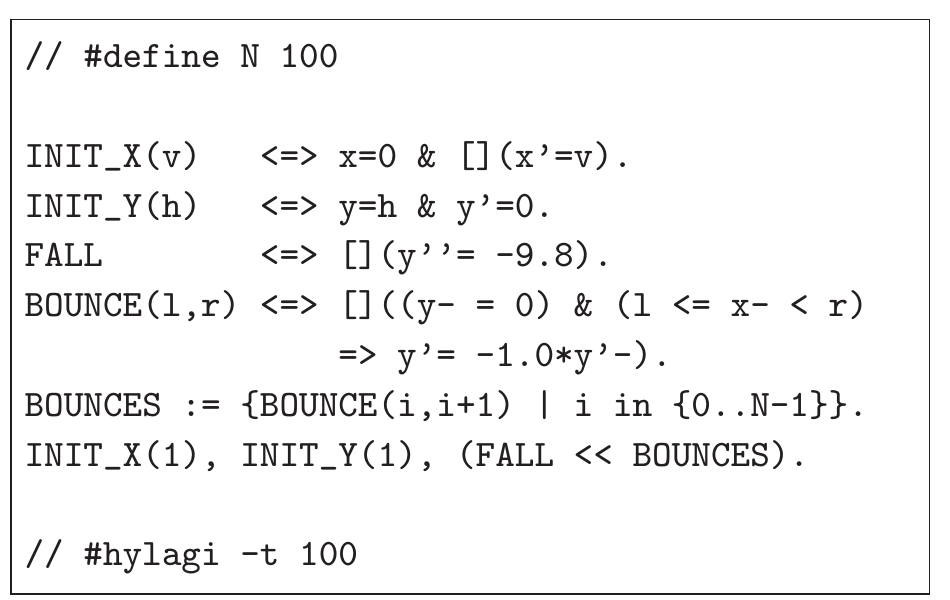
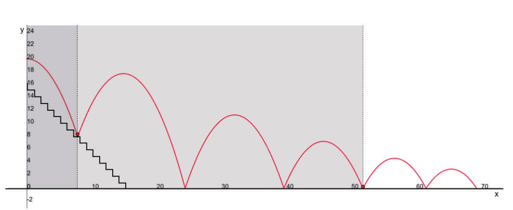
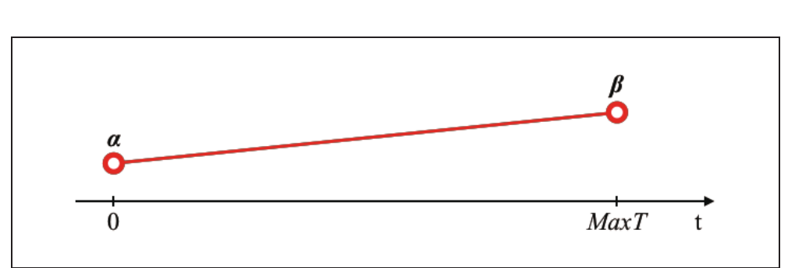
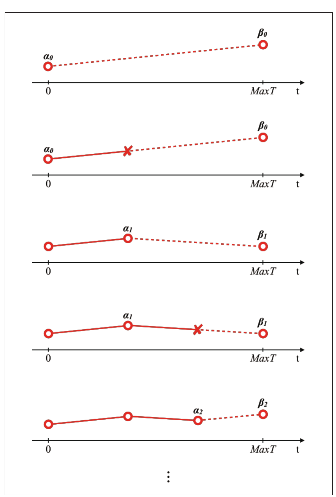
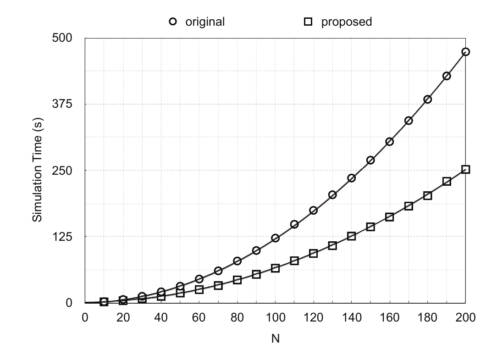

제약 프로그래밍에 관한 학사 논문
2019년 6월
개요
정보이공학부 학부생으로서 내 연구는 실용적인 물음에서 출발했다. 시뮬레이터에 가능한 조건이 잔뜩 쌓였을 때, 더 이상 일어날 수 없는 조건을 다시 검토하지 않게 하려면 어떻게 해야 하는가? 나는 값이 변화하는 방향을 이용해 낡은 조건을 탐색에서 제거하는 방법을 HydLa용으로 개발하고 평가했다. 벤치마크 모델에서 전체 시뮬레이션 시간은 약 절반으로 줄었다.
이 연구는 나의 디자인 철학의 이른 토대다. 제약 프로그래밍은 복잡한 결과를 언제나 직접 지정할 필요는 없다는 것을 가르쳐 주었다. 그것은 규칙과 우선순위, 경계로 신중하게 정의된 공간에서 떠오를 수 있다. 그 사고방식은 지금 AI 시대에 제약에 기반한 디자인, 즉 생성 시스템이 자유롭게 움직일 수 있는 조건을 디자인하는 나의 접근에 그대로 이어져 있다.
초록
HydLa는 하이브리드 시스템, 즉 연속적인 변화와 이산적인 사건이 서로 작용하는 시스템을 위한 모델링 언어다. 제약에 기반한 설계 덕분에 그런 시스템을 간결하게 기술하고 높은 정밀도로 시뮬레이션할 수 있다. 그 대가로, 모델이 커지면 이미 무관해진 규칙까지 포함해 수많은 조건부 규칙을 시뮬레이터가 계속 검사하게 된다.
이 연구는 그러한 가드 제약을 동적으로 줄이는 방법을 제안했다. 값이 한 방향으로 계속 움직이는 단조적 거동을 인식하면, 시뮬레이터는 특정 가드가 앞으로 결코 참이 되지 않는다고 판단해 안전하게 검사를 멈출 수 있다. 이 접근은 비슷한 가드를 가진 대상이 많은 모델에서 특히 효과적이었고, 측정된 실행 시간은 원래의 약 절반으로 떨어졌다.
1. 서론
하이브리드 시스템은 연속적인 거동과 이산적인 사건을 함께 가진다. 튀는 공이 단순한 예다. 공중에 있는 동안 위치와 속도는 연속적으로 변하지만, 바닥에 닿는 순간은 방향을 바꾸는 이산적인 사건을 만든다. 온도조절기, 자동차, 로봇은 모두 같은 혼합을 더 중대한 형태로 품고 있다.
HydLa를 쓰면 하나의 절차적 순서를 일일이 적어 내려가는 대신, 수학적·논리적 제약으로 이런 시스템을 기술할 수 있다. 시뮬레이터인 HyLaGI는 반올림 오차 없이 기호 계산을 수행할 수 있고 불확실한 파라미터도 다룰 수 있다. 그러나 이 표현력 높은 접근은 규모의 문제를 낳는다. 특정 조건에서만 활성화되는 규칙이 모델에 많아지면, 시뮬레이터는 각 조건이 다음에 일어날 수 있는지를 거듭 물어야 한다.

2. 시뮬레이션 속의 가드 제약
가드 제약이란 가드 조건이 충족될 때만 활성화되는 규칙이다. 위의 벤치마크에서는 바닥의 각 구간이 저마다 규칙을 가진다. 공의 높이가 0에 이르는 순간 수평 위치가 그 구간 안에 있으면 튐 규칙이 적용된다. 따라서 바닥을 더 잘게 나눌수록 시뮬레이터가 살펴야 할 가드도 늘어난다.
실험에서는 구간 수를 10개에서 200개까지 바꾸었다. 원래의 시뮬레이터는 그 수의 제곱에 가깝게 느려졌다. 이는 장난감 같은 예제를 넘어서는 문제다. 규모가 큰 모델은 수많은 물리적 대상과 접촉 영역, 일어날 수 있는 사건을 바로 이 가드의 형태로 표현하게 되기 때문이다.
3. 병목의 위치
프로파일링 결과, 느려짐은 시뮬레이터 전체에 고르게 퍼져 있지 않았다. 바닥 구간이 100개일 때, 측정된 실행 시간의 96%가 다음에 일어날 수 있는 가장 이른 사건을 찾는 연산인 FindMinTime에 쓰이고 있었다. 이 연산은 모든 후보 제약의 가드를 반복해서 평가하고 있었다.
이 결과는 최적화의 목표를 분명하게 만들었다. 시뮬레이션되는 거동은 완전히 그대로 두면서, FindMinTime이 고려해야 할 가드의 수를 줄이는 것이다.
4. 가드 제약의 삭감
공이 계단을 튀며 내려가는 장면을 떠올려 보자. 공이 어떤 계단을 지나 계속 앞으로 나아가면, 그 계단은 더 이상 공에 영향을 줄 수 없다. 그림을 보는 사람은 공 뒤에 있는 계단을 곧바로 무시하지만, 원래의 알고리즘은 그 하나하나를 계속 검사하고 있었다.

어려운 부분은 버린 가드가 나중에도 결코 필요하지 않다는 것을 증명하는 일이다. 지금 거짓이라는 이유만으로 제거하면, 그 조건이 다시 참이 될 때 조용히 잘못된 결과를 낳을 수 있다. 그래서 제안 방식은 단조성을 이용한다. 어떤 변수가 일정 시간 구간에서 계속 증가하거나 계속 감소한다고 보장되는지를 따지는 것이다.
4.1 균일 단조성에 대한 접근
첫 번째 접근은 변수가 시뮬레이션 내내 한 방향으로만 움직이는 경우에 적용된다. 바닥을 나눈 모델에서 공의 수평 위치는 언제나 증가한다. 어떤 구간을 지나쳐 버리면 그 구간의 조건은 다시는 충족될 수 없다. 모델 검사 기법을 쓰면 이 성질을 시뮬레이션 전에 확립할 수 있고, 실행이 진행되는 동안 낡은 가드를 안전하게 제거할 수 있다.

4.2 교대 단조성에 대한 접근
현실의 많은 시스템은 한 방향으로만 영원히 움직이지 않는다. 변수는 증가하다가 돌아서서 감소할 수 있다. 그래서 논문은 두 번째 접근을 제시했다. 방향을 하나 가정하고 시작해, 그 가정을 어서션으로 감시하다가, 방향이 바뀐 지점에서 삭감 로직을 다시 시작하는 것이다. 어느 단조 구간에서 제거한 가드는 다음 구간이 시작될 때 복원된다.

5. 실험 결과
나는 균일 단조성 접근을 구현하고 바닥을 나눈 모델로 평가했다. 원래의 알고리즘과 제안 알고리즘 모두 구간 수가 늘어나면 시간이 더 걸렸지만, 제안한 쪽은 일관되게 일을 덜 했다. 적합시킨 곡선을 비교하면 최고차항 계수가 1.1463에서 0.6083으로 떨어졌다. 이 벤치마크에서 전체 시뮬레이션 시간은 대략 절반이 되었다.
이 결과는 모든 HydLa 모델이 두 배 빨라진다는 주장이 아니다. 이 방법이 어디에서 도움이 되는지를 보여 줄 뿐이다. 가드가 걸린 대상이 많고 변화의 방향을 증명할 수 있으며, 실행 도중에 가드가 영구히 무관해지는 모델이다.

6. 결론과 향후 과제
이 연구는 더 빠른 저수준 계산만이 아니라 모델에 대한 지식이 시뮬레이션을 효율적으로 만들 수 있음을 보였다. 단조성을 이용해 어떤 가능성이 이미 불가능해졌는지를 인식함으로써, HyLaGI는 결과를 바꾸지 않고 활성 제약 집합을 줄일 수 있다.
구현해 실험한 것은 균일 단조성이다. 논문은 이후의 과제로 두 방향을 남겼다. 방향이 바뀌는 거동에 대한 어서션 기반 방법을 평가하는 일과, 단조성 이외의 불변식을 이용해 안전하게 제거할 수 있는 제약을 더 찾아내는 일이다.
호리우치 다카후미, 우에다 가즈노리 「Dynamic Reduction of Guarded Constraints for the Hybrid Systems Modeling Language HydLa」 2019년도 일본인공지능학회 전국대회(제33회), 2019년. DOI: 10.11517/pjsai.JSAI2019.0_1E3OS3b02